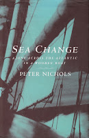

{kind=link}
Toad is gone. I know this absolutely as I sit here
in the cockpit on what is now becoming rather a nice day. The sun is out, the
sea is going down.
Knowing this I look at the boat around me,
the teak vent boxes I built on the cabin roof. The stainless-steel guard rail
stanchions I installed. The winches, the rigging. The new compass Martin and I
hooked up. The slight imperfection beneath the paint on the cabin side that I
know is my plug of a hole made by Harry’s useless depth gauge. I look up and
down the boat and I cannot see an inch of it that I haven’t remade according to
my idea of what would make Toad the best it could be. Now I
know that the leak will not get better but worse, that I must get off, save my
life and let Toad sink.
I have never thought of Toad
as ‘she’ the way that many think of their boats. My brother David liked to call
it ‘him’. To me Toad doesn’t have a gender, but it is certainly
something far more than the sum of its wood and bits and pieces. With every
screw and bolt and pass of a paintbrush that J. and I gave it, this boat made
these its own and added something of itself. It has absorbed more love into its
fibres than any amount of paint or varnish, until this has become part of the
matrix. What Toad is to me now is a thing that was made and that lives
from that love.
And I believe Toad
loves me back.
So as I sit in the cockpit and look at it
with tears pouring down my face, I am careful to keep quiet. I don’t say
anything. I’m not going to tell it what is going to happen now.
 |
| Sea Change by Peter Nichols. Published Viking 1997 |
{kind=link}
There was not an accessible inch of Goldenray
that I’ve not worked over, repeatedly, and with increasing despair as I realised
I didn’t have the skill or the time or the physical strength to keep up with
her deterioration. I have felt her as an ache in my arms and a nagging reproach
in my head. I have loved her for her generous shape, for her welcome to my
family and for the thanks she has returned for every single exhausting day of labour
I have given her. Like Peter Nichols with Toad, I have believed that Goldenray
loved me back. I think she trusted me.
Goldenray
died the day I finally gave up that struggle. After that it was as if we were sitting
by her body. Now I’m writing her
obituary.
Goldenray
was an old Scottish MFV (motor fishing vessel). We think she was built in the
Isle of Skye in about 1946 (the same chronological age as the much more
youthful Peter Duck). She was 50’ long, 16’ wide, larch planking on oak
frames and probably weighed about 45 tons. Wooden boats of Goldie’s type
are estimated to have about 30 years of commercial working life. Somehow, when
that was over, she came to the River Deben. Many people have said they can’t
remember a time when she wasn’t here.
One set of owners worked on her with love, money and
skill as their retirement project. They rebuilt her wheelhouse, installed modern
electronic equipment, a good engine and large freshwater tanks. They lavished
fine wood fittings in her fore cabin and saloon (formerly her fo’csle and fish
hold) and planned to cruise together through the French canals. Then the husband died and the wife couldn’t
bear to be near the boat anymore. Goldenray was sold on as a houseboat, providing
cheap accommodation to people in relative penury, those in marital trouble or
young couples taking their first steps towards affording a house. People were glad of her for a few years but she wasn’t a permanent
home.
As a houseboat she was static, never leaving the dock
where she was moored. The dock was a good place for people but invisibly for Goldenray
it was the beginning of her end.
Apart from human love and care the other essential factor
which gives a boat ‘life’ is its response to the wind and the waves. When Goldie
rose up with each tide, and rocked reminiscently, she felt a different being from
the hours she lay asleep, cushioned in the mud.
You might think that it’s just another sentimental projection
of our imaginations, a sort of pathetic fallacy. However, it is also true that
for wooden boats, the air in the confined space of a dock, is itself confined
and thus likely to deposit the spores which cause rot. Fresh water, falling from
the sky as rain, is far more harmful to wood than the salt water dashed against
the hull and over the decks by the action of the waves. The upperworks, which
are the living space, deteriorate much faster than the underwater planking which
is pickled by brine and mud.
Goldenray,
like an old person confined to bed, began to waste away. Her succeeding owners cleaned
and painted her assiduously but by the time Francis bought her in November 2005,
she was already considered too structurally unsound to take the risk of going
out onto the river.
In our innocence, we didn’t think this mattered. We
already had Peter Duck as a sea-going vessel. We wanted Goldie as
a family base and she did her best to oblige. Bertie went to sea scouts from
her, Francis wrote parts of Strange Days Indeed in her wheelhouse. She
appeared as ‘Lowestoft Lass’ in The Lion of Sole Bay and Pebble.
Jon Tucker in New Zealand appropriated her name for a fictional family home in Those
Sugar Barge Kids. We played games on board, welcomed our friends, enjoyed her
quality of self-contained solitude. It was a serious blow when Francis’s back
problems meant that she was no longer a comfortable place for him.
We spent less family time on board, though she
continued to offer short term refuge to people who needed somewhere to stay
before they moved on. Claudia stayed there, Ned stayed there, another friend
called Will lived on board for a year, I think. Lesley Walker reminds me she too was there for a few months. Goldenray gave my mother a safe place
to sit -- and sometimes attain some peace -- when dementia made the world such
a confusing, threatening place
Goldie’s deterioration became more marked and I began
to fail to keep pace with her essential maintenance. Most of her appearances in
fiction are as a disaster waiting to happen – and increasingly often they did. Her
first serious near-sinking took place in 2015.
It’s four in the morning and I can hear the tide
running through the gap in the plank which I haven’t been able to plug. It’s
okay. The electric dirty water pump which I’ve managed to borrow is just about
keeping pace with the inflow. I don’t have any electricity on board but I’ve
plugged into a neighbour’s supply. I had thought he was away and broke into his
boat with another neighbour's connivance. Then he came back at 1.30 am, found
my trespassing cable and unplugged it. Chucked it back at me. Very likely
cross. I’d fallen asleep by then on the wheelhouse floor but I woke when the
pump went quiet. My brain was slow to work out what had happened and by the
time I’d gone on deck my neighbour had gone to bed. I'd never met him and I
knew I was already in the wrong but I was desperate so I banged on the side of
his cabin until I woke him and then I managed to explain why I needed to use
his supply. I don’t know what I’d have done if he hadn’t let me plug back in; I
couldn’t keep pace with that quantity of water by hand.
|
|
All I need to do now is stay awake and keep
checking. Everything has been swamped and soaked up to two and three feet in
the cabin. The bunk where I’m lying slopes sideways because the big, empty freshwater
tank underneath floated up in the earlier flood and has settled back down at an
angle. It’s too heavy for me to move and anyway it’s not a priority. All that
matters is that the pump should keep running for as long as the tide is up. In
four or five hours’ time the water will be gone again and she'll be safely back
down sitting on the mud. It’ll be Monday morning – it is Monday
morning – I’ve asked a shipwright to come and assess the problem and then I’ll
decide what I need to do next. How bad is this? Will it be give-up time for
this poor old boat, Goldenray? I don't want to think about it.
Against their better
judgement the River Deben shipwrights did their best to help, hammering on
tingles, fresh plywood, layers of epoxy. ‘I’m not mending your boat, you
understand, I’m just trying to keep the rain out for you.’ But the rain
wouldn’t be kept out for long. Nor would the river. Goldenray was home
to Bertie and his dogs but increasingly, as he lay in his bunk at night, he
could hear the water trickling in to the bilge as the tide rose. Art, the marine electrician, mended her pumps
and added more. Solar panels and storage batteries were fitted to reduce the
risk of pump failure due to electricity outage. Trickling, flowing, whirring,
gushing were reassuring sounds when the tide was up. If the boat fell silent, we knew it meant she would soon begin to fill.
A malicious sinking in
2021 was traumatic. It was as if someone clubbed a nonagenarian. Everybody
rallied round to help and we were too angry to give in then. We cleaned Goldenray
up with the help of our friend Sally. Bertie replaced his possessions and moved
back on board. We bought a de-humidifier and covered the decks in roofing felt
but the structural deterioration continued and the rain soon discovered new
ways in. I puttied up 2/3 of the accessible area of her hull and painted it
sludge grey. I should have completed the task this summer but couldn’t find the
energy. Bertie saw another winter approaching. He lay in his bunk listening to
the leaks and wondering when a fastening would finally fail, an underwater
plank would spring and his home would go down again. I thought about my 70th
birthday and questioned the legacy I was leaving my children.
We gave up. Goldenray
died.
I rang the people who would take her away. Francis found
the necessary money – funeral directors never come cheap. Then we all worked
together – particularly Bertie -- to clear and lighten her so she could float
free from the berth where she’d lain for so long and make her final voyage with
dignity.
Conditions were perfect
on August 3rd as she left the dock to be towed up river. She was floating
as light as Bert could make her, but still wearing her motley of green and
grey, marking my own capitulation. I’m sorry Goldie. You thanked me
every time I filled your seams, sanded or painted you but I couldn’t do it
anymore. Your high straight bow, designed to cut through the wild northern
seas, had become too high as I stood in a dinghy on the mud, trying to prop a
ladder securely.
There were plenty of
people gathered round the dock to see her off but I was just too late. Instead
I went immediately to her final destination, a boatyard further up the river. A
long as my memory serves I don’t think I will forget how lovely she looked as
she came into view. The tug was towing alongside so, from a distance, it looked
almost as if she was floating free.
Goldie slipped sweetly into the travel hoist. Slings
were fitted underneath her and a powerful engine started. Slowly, inexorably,
she was lifted out of the water. For the last time.
Peter Nicols could not
tell Toad what was going to happen next. When rescuers arrived in answer
to his Mayday, he took a sharp knife below and sliced through the exhaust pipe
so the yacht sank faster. He could not abandon her in mid-Atlantic as a
semi-submerged hazard to shipping. It was a coup de grace.
I didn’t tell Goldenray
either. Once she had left the river there were two large skips waiting, two more
on the way and a digger with a claw attachment booked in anticipation. As well
as those dread chainsaws.
But that really doesn’t
matter because she was already dead. She died when we withdrew her life
support. And who wants to know the detail of what happens when a body passes
behind the crematorium curtain or is lowered into earth and the final shovelful
heaped on top? Goldenray didn’t have the same opportunity as Toad
to sink slowly to the ocean depths and become a home for weed and crabs: Goldenray
has gone to landfill.
{kind=link}
{kind=link}
{kind=link}
{kind=link}
{kind=link}
{kind=link}
{kind=link}
{kind=link}
{kind=link}
.JPG){kind=link}
{kind=link}
.JPG){kind=link}
https://authorselectric.blogspot.com/2015/11/the-relay-by-julia-jones.html
https://authorselectric.blogspot.com/2015/10/antarctica-from-suffolk-mud-by-julia.html
https://authorselectric.blogspot.com/2018/10/goldenray-and-goldenray-tale-in-two.html